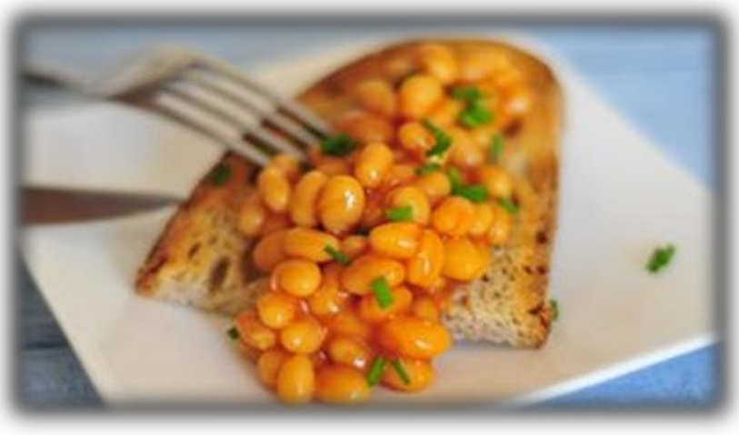

Healthy Snack Ideas
For a healthy diet it is important to try to eat 5 portions of fruit and vegetables every day. Here are some ideas for yummy and healthy snacks.
Before you start, it is important to remember to wash your hands and clean your kitchen work tops.
Cheese and tomato toastie – 93 kcalories
Simply chop the tomato and spring onion, sprinkle them over a slice of crispbread, cover with grated cheese and place under a pre-heated grill for a couple of minutes.
- 1 wholegrain crispbread: 39kcal
- 15g grated 30%-less-fat mature cheese: 47kcal
- 40g tomato: 7kcal
- an optional sprinkling of chopped spring onion

'3-fruit' fruit salad – 102 kcalories
This is very refreshing and easy to make. It includes tinned pineapple and provides two and a half portions of your recommended 5 A Day.
- 50g seedless black grapes, cut in half: 30kcal
- 50g diced apple: 26kcal
- 100g chopped tinned pineapple in juice: 46kcal

Baked beans on toast – 99 kcalories
This is the best comfort food for chilly winter days. You can still enjoy it as part of a healthy diet and it makes a great lunch.
- a 22g slice of toasted wholegrain or wholemeal bread: 48kcal
- 60g baked beans: 51kcal
- optional sprinkling of chives
